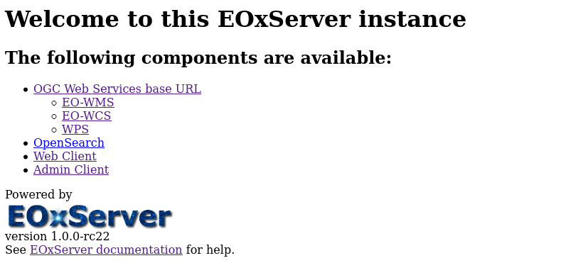
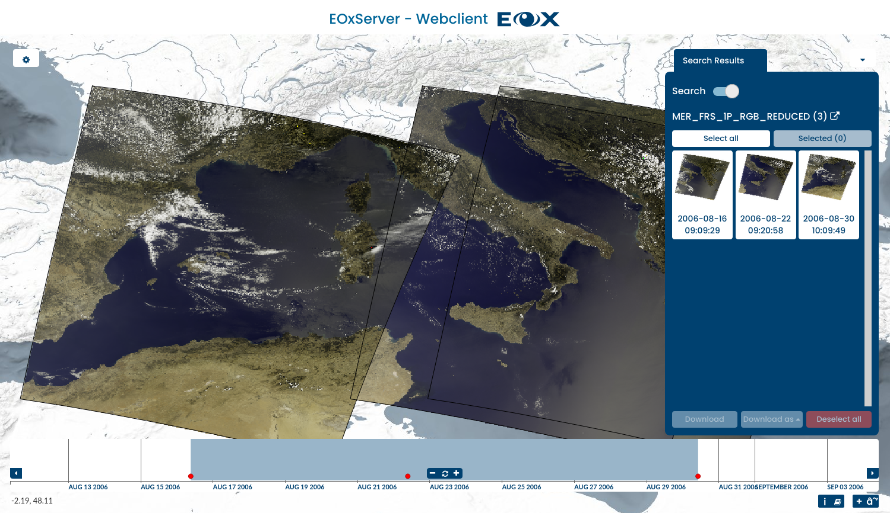

Guide de démarrage rapide EOxServer¶
EOxServer is a server for presenting big Earth Observation (EO) data archives and metadata via Open Standards. It builds upon an Open Source stack of software which includes Python, MapServer, Django/GeoDjango, GDAL, PROJ and a SpatiaLite or PostGIS database.
Ce guide décrit comment :
- Utilisez le client Web pour afficher, filtrer, échantillonner et télécharger des données EO
- Utilisez le client Admin pour inspecter les archives de données EO
Démarrer EoxServer¶
Choisissez . Cela lance un navigateur montrant l’instance de démonstration disponible à l’adresse http://localhost/eoxserver/
{kind=link}
Travailler avec le client Web¶
Cliquez sur le lien Web Client pour ouvrir le client EOxServer intégré.
Au sein de ce client, vous pouvez explorer le contenu de l’instance EOxServer. L’instance de démonstration est remplie de scènes ENVISAT MERIS.
{kind=link}
The client consists of the map view and widgets that contain the main interactions. The main area is the map widget of the client with a set of datasets already displayed. On the bottom, you’ll find the timeslider widget, that allows you to explore the contents in the temporal dimension.

The Layer Selection widget can be expanded by clicking the cogwheel on the top left and it allows you to enable or disable the visibility and configure the rendering of the layers. Also, you can show or hide the streets-overlay and select the background layer. The Filters tab in this widget enables querying for different spatial and temporal values.

Comme pour une carte, vous pouvez zoomer et déplacer la vue à l’heure d’intérêt actuellement visible et sélectionner un moment d’intérêt en dessinant sur la zone contenant les points rouges. Vous pouvez également planer sur un point pour voir l’identifiant du jeu de données. En cliquant sur le point, la carte zoome automatiquement sur l’emprise du jeu de de données.

When a spatial filter is enabled, you can draw a bounding box, polygon or point directly on the map. The drawn feature is used for querying within the Download Tool.

You can get more information of available services and metadata on the selected product by hovering on the product in the search results widget and clicking on the icon in the top right.

Lorsque l’outil de téléchargement est activé, une requête vers le serveur est envoyée. Cette requête inclut l’heure d’intérêt sélectionnée et la boîte englobante. Les résultats sont affichés dans le widget Télécharger, où vous pouvez sélectionner le format, la projection et les jeux de données à télécharger.
Il s’agissait d’une introduction rapide au client Web EOxServer. S’il vous plaît, référez-vous à la documentation en ligne pour plus d’informations sur ce sujet.
Travailler avec le client admin¶
À partir de la page principale d’EOxServer, cliquez sur le lien Admin Client et connectez-vous avec admin de l’utilisateur et mot de passe admin.

Le Client Admin est l’administrateur standard de Django et vous permet de configurer les données disponibles. S’il vous plaît n’hésitez pas à explorer le client. Plus d’informations peuvent être trouvées dans le guide des opérateurs.

For example, you can inspect the collection that is loaded by default by clicking the « Collections » link and then the « MER_FRS_1P_RGB_reduced » link.

You can preview the coverages by going back and clicking on the « Coverages » link.

Ensuite ?¶
Il s’agit d’une démonstration simple, mais vous pouvez faire beaucoup plus avec EOxServer. Le site Web du projet contient beaucoup de ressources pour vous aider à démarrer. Voici quelques ressources à consulter ensuite :
- Voir la vue d’ensemble d’EOxServer pour plus d’informations.
- Lire le Gui des opérateurs EOxServer.
- Read the EOxServer Basics.
- Prêt à utiliser EOxServer? Rejoignez ensuite la communauté sur les listes de diffusion pour échanger des idées, discuter d’améliorations logicielles potentielles et poser des questions.